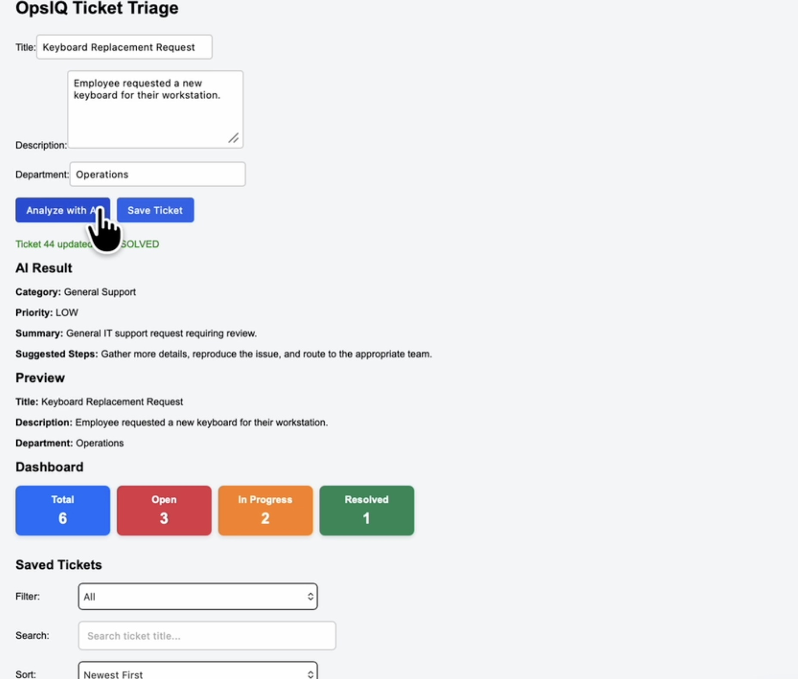

AI + FULL STACK
OpsIQ AI Ticket Triage
An AI-powered ticket management application that helps streamline IT support workflows through automated ticket analysis and prioritization. Users can create, manage, and update support tickets while receiving AI-generated categorization, priority recommendations, and suggested next steps. Built with Angular, Java, Spring Boot, HTML/CSS, and PostgreSQL.
Built with
Angular · Spring Boot · PostgreSQL
OpenRouter LLM · REST API
Read More
OpenRouter LLM · REST API